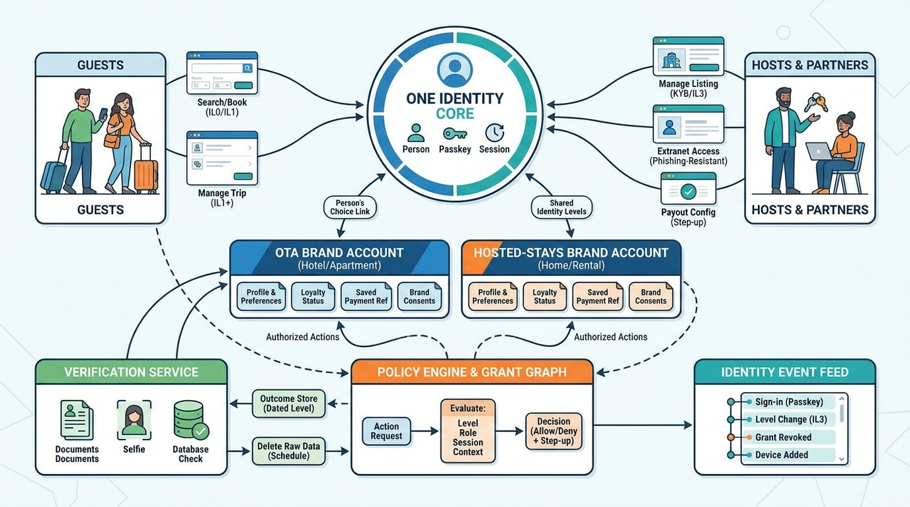

Part VII — TRUST: Making Strangers Safe to Stay With
Who Is Booking, Who Is Hosting: Identity, Accounts and Access

Image generated by Google Gemini (gemini-3-pro-image-preview)
Part VII — TRUST: Making Strangers Safe to Stay With

Image generated by Google Gemini (gemini-3-pro-image-preview)